Overview
Process Permissions are designed to give users or groups read-only access to cases and their objects (DynaForms, Input Documents and Output Documents). By default, only the currently designated user to work on a case can open the case. To allow other users the ability to see (but not change) the data in cases, they need to be assigned Process Permissions to the process and its objects. Process Permissions are designed to offer advanced control over how users access cases and what information they can view at specified tasks during the case. Permissions are applied by process, it is not possible to manage permissions between processes.
Note: If needing to give users write access to cases, see Process Supervisor.
Assigning Process Permissions
To assign Process Permissions to user(s) or group(s), go to the DESIGNER menu and open a process. Then, right click on a blank area of its process map and select the Process Permissions option from the dropdown menu.
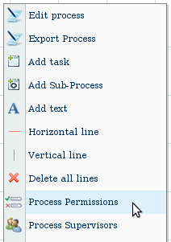
A list of Process Permissions will appear for the current process. To create a new Process Permission, click on the New link at the top of the list.

A dialog box will appear to define the properties for the new Process Permission:

Define the following properties:
- Case Status: Select the status which the case must currently have in order to allow the user/group to access it. The options are:
- All: Give user/group access to the case no matter which status it has.
- DRAFT: Only when the case has "DRAFT" status, meaning that the case's current task has started to be worked on (a step has been opened and saved), but the current task hasn't yet been completed.
- TO_DO: Only when the case has "TO_DO" status, meaning that the case's current task has been assigned to a user, but that task hasn't started to be worked on yet (i.e., no steps have been saved yet).
- PAUSED: Only when the case has been paused.
- COMPLETED: Only when when the case has "COMPLETED" status, meaning that the case finished by arriving at an End of Process routing rule and wasn't closed by canceling or deleting the case.
- Target Task: Select the task where the case must currently be in the process in order to access the case. If the case is currently in any other tasks, then the selected user/group will not be able to open the case. To give access no matter what is the current task, then select the All Tasks option.
- Group or User: Select the user or group who will be given access to cases from the current process.
- Origin Task: Select the task whose objects will be seen by the selected user/group. The user/group will only be able to see objects from this task. To allow the user/group to see objects from all tasks, choose the All Tasks option.
- Participation Required?: Select Yes if the user must have been previously designated to work on the case at some prior point in order to have Process Permissions to access the case. Select No if the user doesn't need to have been designated to work on the case in order to open it. Note that selecting Yes means that the user will only have Process Permissions to open the case after he/she has worked on the case, and not through the whole process.
- Type: Select the types of objects that the user/group will be given access to see: Dynaforms, Input Documents, Output Documents or ALL.
- DynaForm/Input Document/Output Document: If choosing a specific Type, then this dropdown box will appear to select which objects the user/group can access from the Origin Task. Select the specific DynaForm, Input Document, or Output Document or select ALL to give the user/group access to all the objects of that type from the Origin Task.
- Permission: Select one of the two options:
- VIEW: This option allows the user/group to open the case and view its object(s).
- BLOCK: This option prevents the user/group from opening the case and viewing its objects.
- DELETE: This option is listed when an Input or Output Document is chosen from the above list. This permission prevents the user/group from deleting either the Output or Input Document.
- Note: Multiple Process Permissions can be used in combinations when needing to block a small subset of users or block access to a small subset of objects. First, create a general permission with the VIEW option. Then, create more specific permissions which BLOCK access to that smaller subset. See the examples below.
When done defining the new Process Permission, click on Create to add it to the list of existing Permissions.
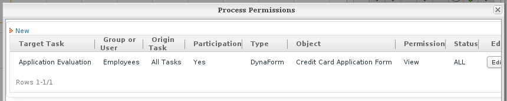
Viewing objects in cases
After permissions have been given to users or groups, they need to have access to the assigned objects. Thus, go to "HOME" and the options where users can have access to the objects are:
Dynaforms Permissions
By going to HOME > Inbox > Information a list of all options will display, click on DynaForms and the list of all DynaForms set on users permissions will display:
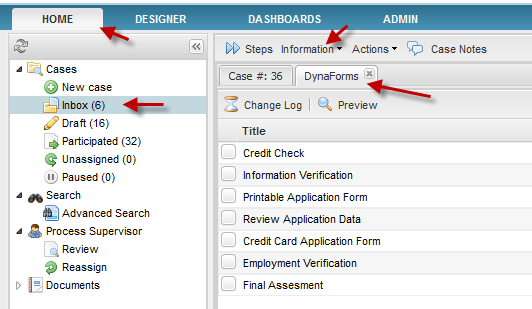
By choosing one dynaform from the list, two options will be selected Change LogandPreview
Change Log
It shows all changes made by any user who has been assigned with Process Permissions to have access to dynaforms which belongs to the current case.
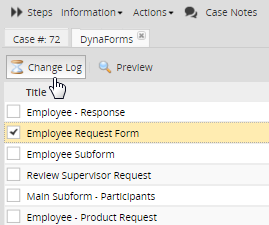
Note: From version 2.0.42any modifications made by Supervisor Users will be reflected on the change log.
Change log will specify:
-
- Field Name: Name of the field which was modified. Usually the name which is displayed is the name given when the field was created.
- Previous Values: If some previous changes were made those values will display on this field.
- Current Values: It will display all the fields and their values modified.
By choosing a dynaform from the list and click on ChangeLog the information to show will be
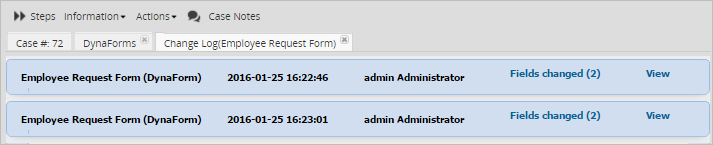
Preview
By selecting a DynaForm, the preview of what was filled during the case will be displayed on view mode:

Input Documents Permission
VIEW Permission
By giving the permission to View an Input Document, this will be available for its downloading.
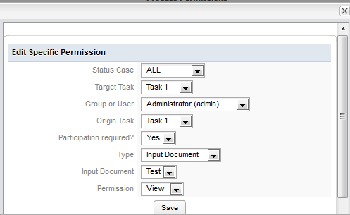
Once this permission is set, go to HOME > Inbox > Information a list of options will display, click on Uploaded Documents and the list of all Input Documents set on users permissions will display:
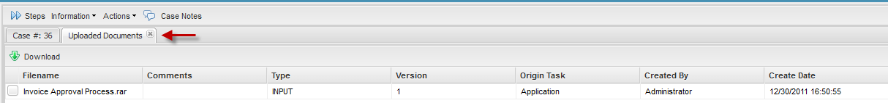
Where:
- Filename: Name of the uploaded document.
- Comments: comments added when the document was uploaded.
- Type: file type in this case it will be always INPUT type.
- Version: If different versions of the document was uploaded here will display the version number of the current uploaded document.
- Origin Task: task on which the document was uploaded.
- Created by: user who uploaded the document.
- Create Date: date when the document was uploaded.
Downloading Uploaded Documents
One of the advantages if the user has permissions to see input documents is the possibility to download them. On the upper side of the available input documents there is the option to download them.
Select the input to download and then click on the Download button:
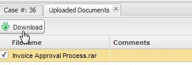
A pop up window will display where the document can be saved on a local computer.
BLOCK Permission
By giving the permission to Block, the input document can't be seen for the user who was set with this permission:
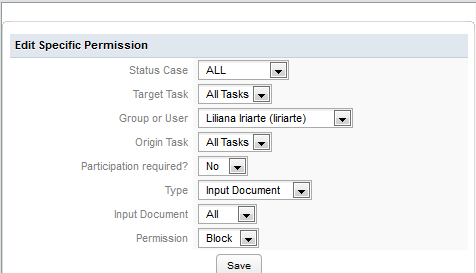
If the user who is set with this permission go to HOME > Inbox > Information > Uploaded Documents and try to see the input document uploaded it won't be able to be seen as this was set with Block permission:
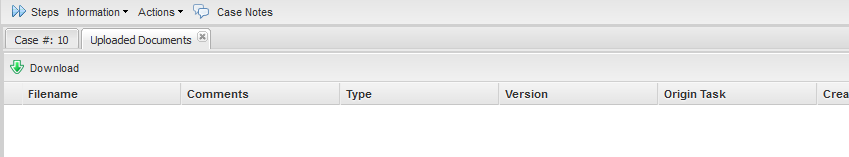
DELETE Permission
Note: Until version 2.0.44 this permission didn't work properly; however, from version 2.0.45 on, the logic of this permission has been changed. See the following explanation.
The Delete Permission grants users/groups the ability to delete existing Input Document files after they have been uploaded to ProcessMaker. Users or groups which have the Delete Permission will see a Delete button next to each Input Document file, allowing them to remove the file.
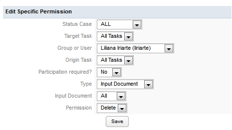
By default users/groups do not have the ability to delete uploaded Input Document files, so the Delete permission will need to be set if needing the ability to delete attached files after they have been uploaded.
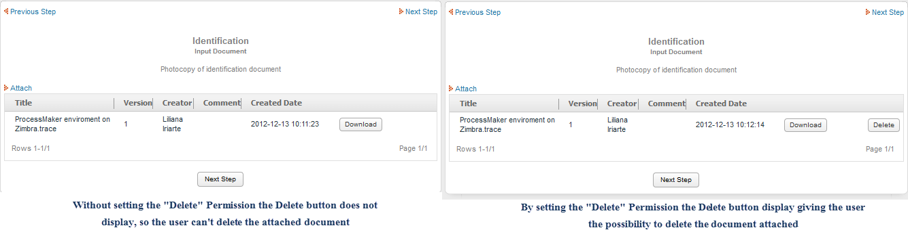
Output Documents Permission
VIEW Permission - Viewing Output Documents
Go to HOME > Inbox > Information to display a list of options. Click on Generated Documents and the list of all Output Documents set on users permissions will display:
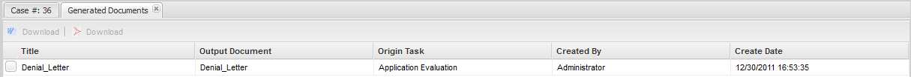
Where:
- Title: Name of the uploaded document.
- Output Document: comments added when the document was uploaded.
- Origin Task: task on which the document was generated.
- Created by: user who generate the document.
- Create Date: date when the document was generated.
Downloading Generated Documents
Another advantage if user has permissions to see output documents is the possibility to download them no matter the format on which the document was generated (PDF or DOC)
Select the Ouptut Document to download and depending on the format generated click on  to download the document on DOC format or click on to download the document on PDF format:
to download the document on DOC format or click on to download the document on PDF format:
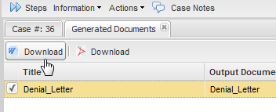
A pop up window will display where the document can be saved on a local computer.
DELETE Permission
Available Version: 2.5
Importing Dynaforms !
By giving the permission to Delete, the Delete button on the Output Document screen will be enabled to have the possibility to delete the document generated. If the document was generated on .PDF and .DOC format, both of them will be deleted.
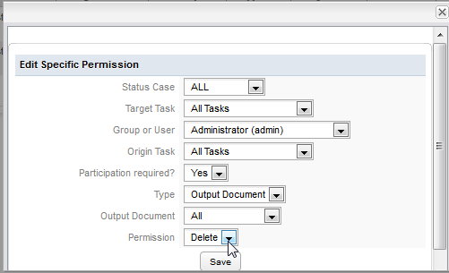
When generating documents while running a case, those will be listed on Information > Generated Documents:

Click on the icon to delete the Output Document chosen; only one document can be deleted at the same time. A dialog box will display to confirm if the document will be deleted:
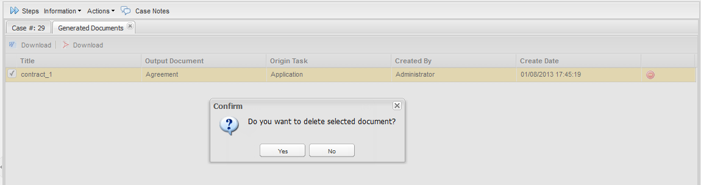
Case Notes Permission
Available Version: 2.5
ProcessMaker Case Notes Permission
This process permission, which is available in version 2.5.0 and later, grants or blocks access to case notes. In previous versions of ProcessMaker, users were allowed to read and write case notes for any case that could be accessed in the users' HOME menu. This universal access to case notes was considered problematic because users might view sensitive information in the case notes and users also received a large number of email notifications from case notes which weren't relevant and clogged their inboxes. The Case Notes Permission was introduced to control which users might access the case notes and eliminate unneeded email notifications. The Case Notes permission can be assigned to users or groups, and it can be used to grant or block access.
Note: By default in version 2.5.0 and later, users will not be able to access case notes. If upgrading ProcessMaker from a previous version, make sure to assign the Case Notes Permission to users or groups which need access.
In version 2.5.0 and later, the following message will appear if trying to access case notes when the Case Notes Permission hasn't been granted:
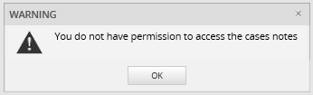
To grant users or groups access to the case notes for a particular process, go to the DESIGNER menu and open a process for editing. Right click on a blank area in the process map and select Process Permissions from the dropdown menu. Then click on New to create a new permission. In the Type field, select Case Notes:
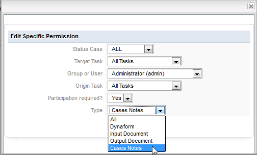
After granting users or groups the Case Notes Permission, make sure that those users can view the cases in a list under the HOME menu. For example, if granting the Case Notes Permission to users who haven't participated in the case, then make sure that those users have the PM_ALLCASES permission in their role, so they can view a list of all the cases under HOME > Advanced Search. Another option is to make the users Process Supervisors, so they can view the case notes by going to HOME > Review.
Message History Permission
Available Version: 2.5.1
Through ProcessMaker versions, users who had participation in a case had the option to see not only a preview of messages sent, even the privates ones, but also to resend messages to any user allowing them to know possible confidential information of a company. Now resending emails functionality has been restricted per user.
By default, users don't have the permission to resend messages, if you want to add a permission for users to resend them open Process Permissionand on Typeselect Message History:
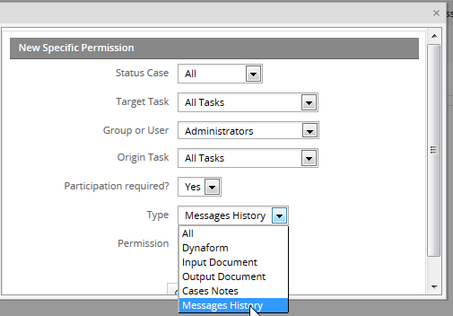
A user or a group of user, depending on how the permission was set, will have access to resend messages and have a preview of them.
Type of permissions are:
- View: Users will have only the permission to view the message sent, inside Message history, options will be:
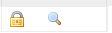
- Block: Users won't have any notification listed inside Message History
- Resend: Users will have only resend permission available:
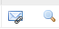
Let's use Credit Card Application process to clarify this permission. We have Application and Verification tasks, as the image below:
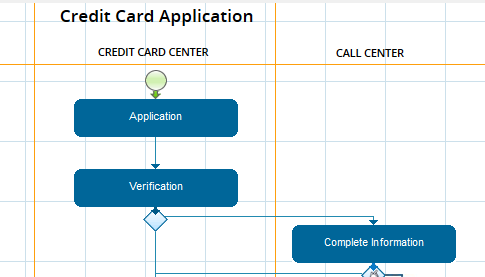
A notification will be sent between this two tasks, this message contains the credit card application, so the only people who should have access is the supervisor of the user who initiated the case, users assigned to the tasks do not have to see this notification and not mention to resend it.
Permission setting for user assigned to Application task, will be:
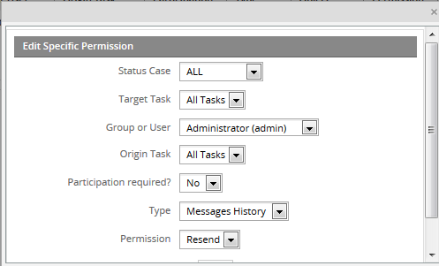
Participation Required is set as No since the supervisor is not assigned to any task to have a participation on the case.
Once case is executed and the notification is sent, the supervisor got to Advance Search and look for the case number where the notification needs to be resend, open the case and go to Information > Message History and the notification sent will be listed as follows:
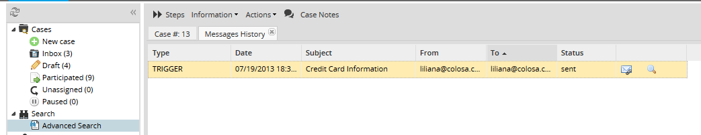
To resend the notification click on the option:
To have a preview of the notification sent click on the option.
A user who doesn't have this permission set (resend and preview a message) the following restrictions will display:

Summary Form Permission
Available Version: 2.8
In previous versions of ProcessMaker, the DynaForm displayed in the Case Summary could be accessed by all users who could view the case in a list under the HOME menu. To restrict access to the Case Summary DynaForm which could contain sensitive data from cases, the Summary Form Permission was added in version 2.8.0 and later.
By default in version 2.8.0 and later, users will not have access to the Case Summary DynaForm. If a user who hasn't been granted the Summary Form Permission tries to access a case summary which uses a custom DynaForm, the following message will display:

To grant the Summary Form Permission to users or groups, open a process for editing. Right click on a blank area in the process map and select Process Permissions from the dropdown menu. Click on New and define an new process permission. In the Type field, select the Summary Form option. Also define the other properties of the process permission.
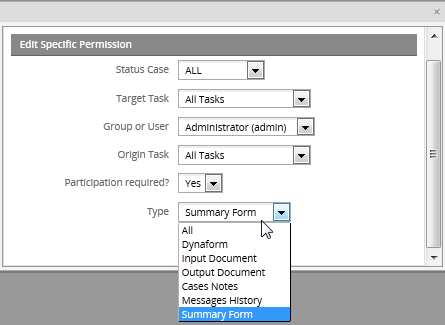
Once a user has been granted the Summary Form permission, the custom DynaForm for the Case Summary can be displayed:

Example: Creating a Process Applying Process Permissions
Defining Process Permissions
Create a process setting the following conditions,
- user1 is assigned to tasks 1 and 5.
- user2 is assigned to task 2,
- user3 is assigned to task 3
- user4 is assigned to task 4.

Then possible specific process permissions are:
1. user1 has permission to [VIEW] [ALL] process objects, no matter what task user1 is participating in [target task = ALL TASKS]. The only condition is that user1 must have already participated in the process [participation=YES].
The permission will be:
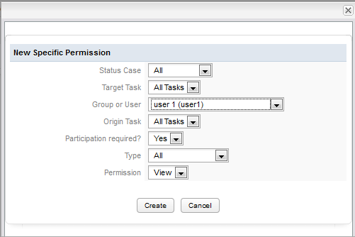
It is also possible to block access to certain objects. For example user1 already has permission to view all objects. This permission can be restricted by defining the following specific process permission:
2. user1 has no permission to view [BLOCK] the dynaform -- > Dynaform_Task2 of Task 2, no matter what task user1 is participating in [target task = ALL TASKS].

Then with the permission defined in Task1 and Task2, user1 has permission to [VIEW] all process objects except for the Dynaform_Task2 of Task 2. In this way the access to the different process objects can be customized.
3. user2 has permission to [VIEW] all Input Documents belonging to Task2, only when user2 is participating in Task4.
Note that with these conditions, the participation parameter is not required, therefore it has the value [participation=NO].
4.user3 has permissions to [VIEW] all Output Documents belonging to Task1, only if the status of the case is [COMPLETED] in this case the user doesn't need to participate in the case [participation=NO] .
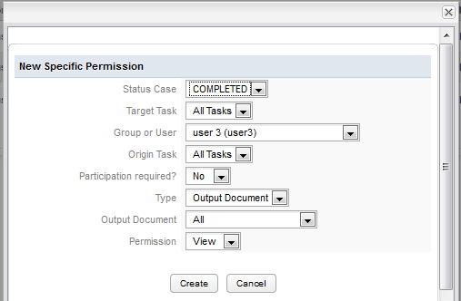
The created permissions are displayed in the Specific Permission List as shown below:
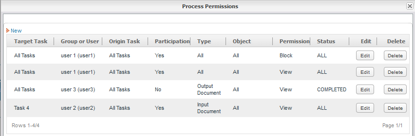
For example, to allow everyone but one person in a group to open cases from the current process, then create a Process Permission giving everyone users option with can be useful when needing to give can be useful to create multiple Process Permissions The first Process Permission VIEW option can be used to give access to a large number of user(s) or a large number of objects, then a subsequent BLOCK options is very useful to Permission property.
Running a Case
Run the case and check every process permissions set above.
1. Accomplish permission 1 and 2: user1 can [VIEW] [ALL] process objects with a participation required on the case, but it can't see Dynaform_Task2 of Task 2:
Run the case until Task4 and log in with user1, go to HOME>Participated, it can be seen that it has (1) case, so in the list the case will be listed, for the example the Case # will be 32
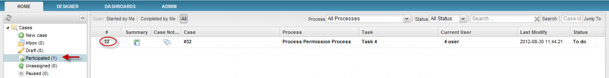Open the case the information of the case will display so go to Information>Dynaforms

And the list of all Dynaforms filled will display, in this case only one Dynaform is displayed because user has permission to see only this dynaform since Dynaform_Task2 is blocked:
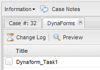
As the permission was set to see all objects, and as one Input Document until now was uploaded, go to Information > Uploaded Documents:
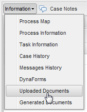
The list of Uploaded Documents will display, in this case only one was generated:
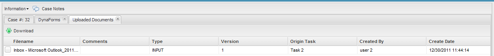Moreover, an Output Document was generated so go to Information>Output Documents:

The list of Generated Documents will display, in this case only one was generated:
 2. Accomplish permission 3, by login in with user2, this user has to have access to the Input Document uploaded during the process by going to Information>Uploaded Documents.
2. Accomplish permission 3, by login in with user2, this user has to have access to the Input Document uploaded during the process by going to Information>Uploaded Documents.
3. Accomplish permission 4: user3 has permissions to [VIEW] all Output Documents belonging to Task1, only if the status of the case is [COMPLETED] and the user participation is not required. So once the case is completed log in with user3 and go to HOME>Participated look for the number of the case, for this example 32 open it and go to Information>Generated Documents and the Output document generated during the case will be listed.